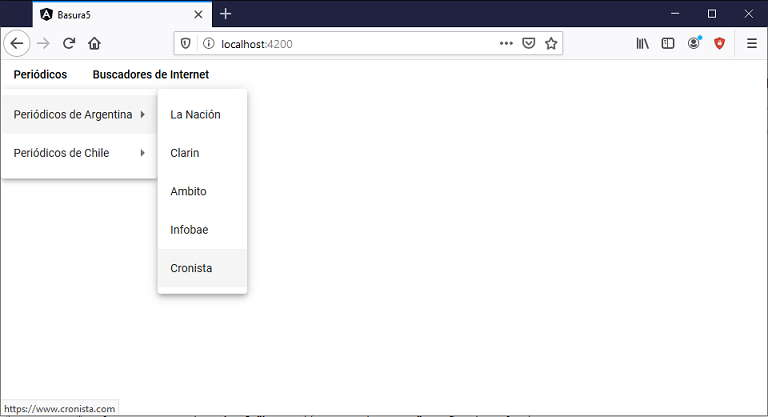

Podemos fácilmente crear menús anidados, es decir opciones del menú que despliegan otras opciones.
Disponer un botón con la etiqueta 'Periódicos', al ser presionado se debe mostrar un menú con los nombres de Argentina y Chile, al seleccionar algún país se muestran una serie de periódicos del respectivo país.
Crear un segundo botón con la etiqueta 'Buscadores de internet' que muestre una lista de buscadores famosos.
Crearemos primero el proyecto
ng new proyecto033
Procedemos a instalar todas las dependencias de Angular Material ayudados por Angular CLI mediante el comando 'add':
ng add @angular/material
Modificamos el archivo 'app.module.ts' para indicar que utilizaremos los módulos 'MatButtonModule' y 'MatMenuModule':
import { BrowserModule } from '@angular/platform-browser';
import { NgModule } from '@angular/core';
import { AppComponent } from './app.component';
import { BrowserAnimationsModule } from '@angular/platform-browser/animations';
import { MatButtonModule } from '@angular/material/button';
import { MatMenuModule } from '@angular/material/menu';
@NgModule({
declarations: [
AppComponent
],
imports: [
BrowserModule,
BrowserAnimationsModule,
MatButtonModule,
MatMenuModule
],
providers: [],
bootstrap: [AppComponent]
})
export class AppModule { }
Ahora nos queda modificar el archivo 'app.component.html' definiendo las etiquetas respectivas para implementar el menú utilizando las etiquetas de Angular Material:
<button mat-button [matMenuTriggerFor]="periodicos">Periódicos</button> <mat-menu #periodicos="matMenu"> <button mat-menu-item [matMenuTriggerFor]="argentina">Periódicos de Argentina</button> <button mat-menu-item [matMenuTriggerFor]="chile">Periódicos de Chile</button> </mat-menu> <mat-menu #argentina="matMenu"> <a mat-menu-item href="https://www.lanacion.com.ar">La Nación</a> <a mat-menu-item href="https://www.clarin.com">Clarin</a> <a mat-menu-item href="https://www.ambito.com">Ambito</a> <a mat-menu-item href="https://www.infobae.com">Infobae</a> <a mat-menu-item href="https://www.cronista.com">Cronista</a> </mat-menu> <mat-menu #chile="matMenu"> <a mat-menu-item href="https://www.emol.com">El Mercurio</a> <a mat-menu-item href="https://www.latercera.com">La Tercera</a> <a mat-menu-item href="https://www.lacuarta.com">La Cuarta</a> </mat-menu> <button mat-button [matMenuTriggerFor]="buscadores">Buscadores de Internet</button> <mat-menu #buscadores="matMenu"> <a mat-menu-item href="https://www.google.com">Google</a> <a mat-menu-item href="https://www.yahoo.com">Yahoo</a> <a mat-menu-item href="https://www.bing.com">Bing</a> <a mat-menu-item href="https://duckduckgo.com">DuckDuckGo</a> </mat-menu>
Podemos ver que para desplegar otros submenúes debemos agregar la propiedad [matMenuTriggerFor]:
<mat-menu #periodicos="matMenu"> <button mat-menu-item [matMenuTriggerFor]="argentina">Periódicos de Argentina</button> <button mat-menu-item [matMenuTriggerFor]="chile">Periódicos de Chile</button> </mat-menu>
Luego especificamos el submenú:
<mat-menu #argentina="matMenu"> <a mat-menu-item href="https://www.lanacion.com.ar">La Nación</a> <a mat-menu-item href="https://www.clarin.com">Clarin</a> <a mat-menu-item href="https://www.ambito.com">Ambito</a> <a mat-menu-item href="https://www.infobae.com">Infobae</a> <a mat-menu-item href="https://www.cronista.com">Cronista</a> </mat-menu>
Como las opciones son enlaces o anclas a otros dominios de internet, lo más fácil es emplear la etiqueta 'a':
<a mat-menu-item href="https://www.lanacion.com.ar">La Nación</a>
Angular Material utiliza elementos nativos <button> y <a> para garantizar una experiencia accesible de forma predeterminada.
El elemento <button> debe usarse para cualquier interacción que realice una acción en la página actual. El elemento <a> debe usarse para cualquier interacción que navegue a otra dirección.
Si ejecutamos la aplicación tenemos como resultado:
Podemos probar esta aplicación en la web aquí.